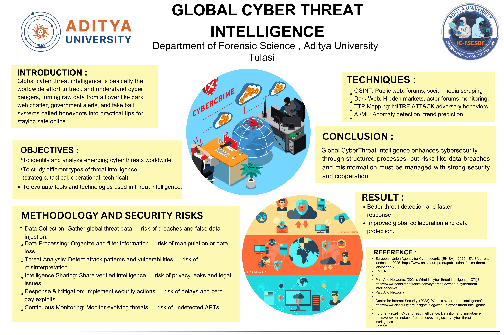
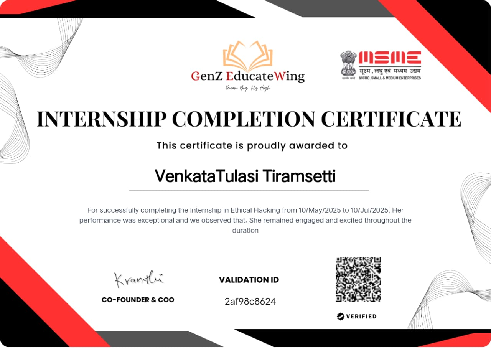

VENKATA TULASI TIRAMSETTI
B.Sc Cyber Forensics Student
Cybersecurity • Digital Forensics • Cyber Crime Investigation
📄 Download ResumeVENKATA TULASI TIRAMSETTI
B.Sc Cyber Forensics Student
About Me
I am Tulasi, a B.Sc Cyber Forensics student with a strong interest in Cybersecurity, Digital Forensics, Cyber Crime Investigation, and Information Security. I completed a 45-day internship at the CID Cyber Crime Investigation Department, Mangalagiri, where I gained exposure to cybercrime investigation processes and digital evidence handling.
I am passionate about learning forensic tools, network security, cyber threat intelligence, and emerging technologies in cybersecurity. My goal is to build a successful career in Cybersecurity and Digital Forensics while contributing to a safer digital environment.
- Digital Forensics
- Cyber Security
- MS Word
- PowerPoint
- Networking Knowledge
Technical Skills
Soft Skills
- Communication
- Team Work
- Problem Solving
- Time Management
Career Objective
To build a successful career in Cybersecurity and Digital Forensics by continuously enhancing my technical skills, gaining practical experience, and contributing to the prevention and investigation of cyber crimes.
Certificates
Cyber Threat Intelligence Poster

Certificates

.jpg)
.jpg)
.jpg)
.jpg)
PDF Certificates
Contact
Email: venkatatulasitiramsetti@gmail.com
Phone: 7095252575